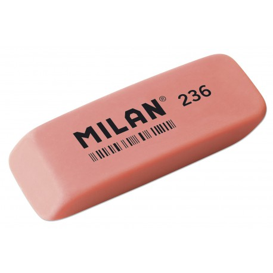

e314 - guajaková guma - potravinářských přídatných látek ... E314: GUMA GUAIACO Guaiac guma je přírodní pryskyřice vyráběná ze stromu druhu Guajacum officinale (viz foto) a také z podobných tropických stromů. Tento produkt je antioxidantem v cola. V současné době nejsou známy žádné negativní vedlejší účinky na koncentrace běžně užívaného guajakového gomu, ale vyskytly se některé případy alergických forem spojených s ...
Mikroporinė guma - Almeida Megzta, 80 mm baltos spalvos elastinė juostelė (guma). add_shopping_cartĮ krepšel ...
Duslintuvo guma (tvirtinimas) | Naujos ir naudotos ... Dekoruota guma petnešėlėms. Spalva balta. Plotis 1,8cm. Kaina už metrą... 0.90€ / m Į krepšelį . Patinka. Palyginti. 1; 2 > >| Rodoma nuo 1 iki 40 iš 74 (2 puslapių) Pristatymas . ne tik ...
Visa tiesa apie gumą - Sileta Guma gali turėti keletą reikšmių, priklausomai nuo to, kaip ji naudojama. Yra kramtomoji guma, gumos arabikos, dantenų diskai, gumos saldainiai, taip pat dvi tos pačios pavadinimo vietos. Kramtomoji guma - tai saldainių tipas, kurį reikia kramtyti, yra pagamintas iš medžio latekso, vadinamo kramtomoji guma, ir yra natūralus produktas.
Siuvimo reikmenys - guma - megzta guma Mes darome pasaulį lankstesniu! Koncentruotas gumos ir plastiko gaminių asortimentas Palankios kainos ir sąlygos pirkti tiek mažmena, tiek didmena Apie mus Mes tikime, kad gera komanda – jau pusė darbo! …kad šiandien būtume geresni nei vakar Mes atsakingai žiūrime tiek į parduodamų prekių, tiek ir į aptarnavimo kokybę. Daugiau 1 Metų profesionalios patirties 1 % […]
SBR lakštinė guma ~ AGOMA Mikroporinė guma (kitaip dar vadinama porėta ar akyta guma) gaminama iš EPDM gumos ir pasižymi nedideliu svoriu. Mikroporinė guma atspari atmosferos poveikiui (orui, UV spinduliams), ugniai. Mikroporinėje gumoje esančios mikroporos yra uždaros struktūros, todėl nepraleidžia oro ir negeria vandens. Mikroporinė guma naudojama termoizoliacijai, tarpinių ir kitų sandariklių gamyboje ...
SEL - GUMA guma statusas T sritis fizika atitikmenys: angl. rubber vok. Gummi, m rus. резина, f pranc. caoutchouc, m; gomme, f Fizikos terminų žodynas : lietuvių ...
Guma | Elastinė guma | Guma siuvimui - Darau.lt guma statusas T sritis ekologija ir aplinkotyra apibrėžtis Sintetinio arba natūraliojo kaučiuko vulkanizacijos produktas.atitikmenys: angl. gum; processed rubber; rubber; vulcanized rubber vok. Gumme, f rus. резина, frus. резина, f
Kramtomoji guma - įsigykite internetu arba mūsų ... Plasti Dip’as kitaip dar vadinamas „skysta guma“, todėl jis puikiai izoliuos nuo drėgmės sodo baldus, tvoras ir kitus įrenginius. Taip pat jis neblunka saulėje, todėl daiktai ilgai išlaikys naują žvilgesį.
Duslintuvo guma (tvirtinimas) | Naujos ir naudotos automobiliu dalys Lietuvoje | ShopCar.Parts
2020.10.29 11:24

LT EN RU DE Profilis Elektronikos dalys
Elektronikos dalys
ABS blokas ABS kompiuteris Antena (GPS antena) Antenos blokelis Atbulines eigos daviklis (varlyte) Ausinimo skyscio lygio daviklis Automagnetola Baterija - Akumuliatorius CD keitiklis Centrine vakuumo valdymo pompa Centrinio duru uzrakto varikliukas Duru uzrakto mygtukas Duru valdymo blokelis Duslintuvo sklende EGR slegio daviklis ESP greitejimo sensorius ESP kompiuteris Ekranelis Elektrinis greicio pedalas Elektrinis slegio voztuvas Farkopo rele (kablio) Galinio lango uzuolaidos varikliukas Galinio lango valytuvu varikliukas Galinio vaizdo kamera Garso signalas Garso stiprintuvas (audio) Generatoriaus rele (Reguliatorius) Greicio daviklis (spidometro daviklis) Greiciu dezes kompiuteris Imobilaizerio antena Imobilaizerio kompiuteris Isorinis kuro siurblys Itampos stabilizatorius Itampos stabilizatorius Jungiklis sviesu ijungimo Kiti elektroniniai davikliai Kiti kompiuteriai Kolektoriaus sklendziu varikliukas Kolektoriaus slegio daviklis Komforto blokas Komutatorius Korteliu skaitytuvas Kruizo kontrole Kruizo kontroles daviklis (varlyte) Kuro bako siurblio matuokle Kuro bako siurblys Kuro bako voztuvas Kuro purkstuku valdymo blokas (kompiuteris) Kuro siurblio elektrine dalis Kuro siurblio rele Kuro slegio daviklis Lango pakalejo valdymo blokelis Langu apiplovimo varikliukas Langu valdymo blokelis Lauko temperaturos daviklis Liuko varikliukas Navigacijos cd skaitytuvas Navigacijos kompiuteris Oro isiurbimo temperaturos jutiklis (daviklis) Oro kompresoriaus kompiuteris Oro kondicionieriaus daviklis Oro slegio daviklis - MAP Oro srauto matuokle Pakabos kompresorius Parktroniku kompiuteris Pavaros paskirstymo dezes kompiuteris (razdatkes kompiuteris) Peciuko reostatas Peciuko sklendes varikliukas Peciuko sklendes varikliuko trosai Priekinis langu valytuvu varikliukas Rankinio stabdzio kompiuteris Rele Rezistorius SRS AIRBAG KOMPIUTERIS - ORO PAGALVIU VALDYMO BLOKAS Salono ventiliatorius Sankabos pedalo daviklis Saugikliu deze Selenoidas (Elektromagnetinis selenoidas) Signalizacijos blokelis Smuginis kuro blokavimo daviklis Srs Airbag daviklis Sviesu valdymo blokas TCS mygtukas Uzvedimo komplektas - variklio kompiuteris Vairo padeties daviklis Vairo stiprintuvo kompiuteris Vairo valdymo kompiuteris (blokas) Valytuvu valdymo blokelis Variklio kompiuterio ventiliatorius Variklio kompiuteris Velenelio fazes voztuvas Ventiliatoriaus valdymo rele Webasto (Vebasta) Webastos siurbliukas Xenon aukscio daviklis Zemu dazniu garsiakalbis Zibinto aukscio reguliatorius (korektorius) Zvakiu Pakaitinimo rele Irankiai